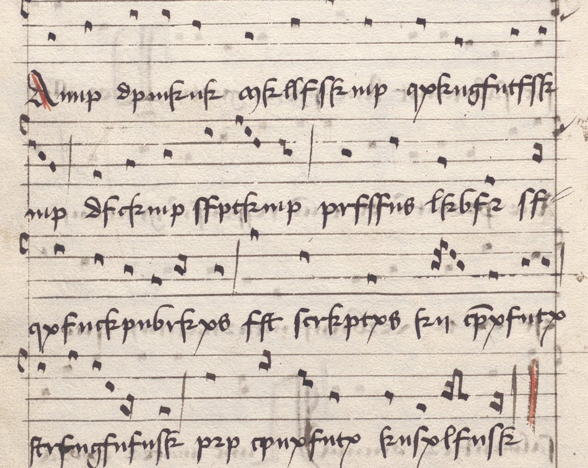
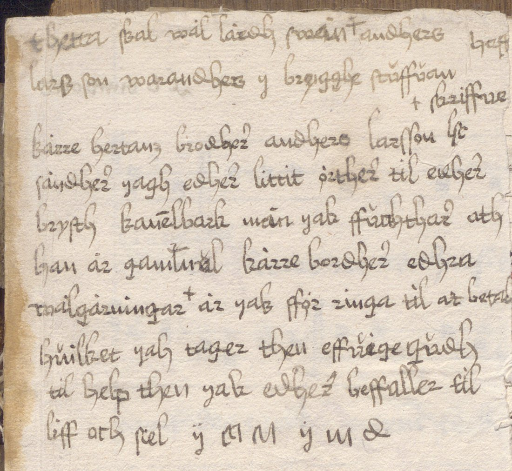
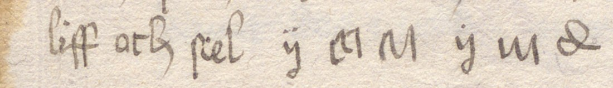

At a glanceRead in part · 125 of 131 cipher tokens
- The document
- A paper book of sequences with square chant notation, written in 1517 in the Strängnäs convent for the Dominicans of Västerås. A slip pasted on f. 1r carries a short private note in Old Swedish.
- Where
- Uppsala University Library, C 513. DECODE R4349 catalogues it as a ciphered letter from Strängnäs with “six symbols”, sender and recipient unknown. The record has one placeholder image and a scan of two catalogue pages.
- The cipher
- Two pieces. The scribe’s colophon on f. 19v writes every vowel as the next letter of the alphabet (a→b, e→f, i→k, o→p, u→x). The note on the slip ends with six signs where a signature would stand.
- How it was read
- The folio was found in the library’s Alvin scans and transcribed letter by letter, 125 letters. Decoded with the vowel rule, it matches the printed reading word for word.
- Credit
- Andersson-Schmitt, Hallberg and Hedlund’s catalogue of the Uppsala C collection (1992) gives the rule and the reading of the colophon. It is checked here, not found.
- What it says
- The colophon says the book was written in 1517 in the Strängnäs convent for the convent of Västerås. The note sends herbs and cinnamon bark for Anders Larsson’s chest.
- Still open
- The six signs ÿ ɑ M ÿ u ꝺ. The colophon’s rule does not fit them, no shift of the alphabet gives a name, and six signs cannot fix a key.
01 The colophon on f. 19v

C 513 is a sequentiary of 84 paper leaves in one early-16th-century cursive hand. The owner’s entry on the front pastedown reads Liber conuentus insulensis ordinis predicatorum. f. 19v closes the sequence Benedicta sit celorum regina with “…in celesti patria Amen”. The scribe then carried on in the same hand, on four more text lines under notation, in what looks like a garbled language. A red catchword Corda manibus, the incipit of the next sequence, closes the page.
Annp dpmknk mkllfskmp qxkngfntfsk- mp dfckmp sfptkmp prfsfns lkbfr sf- qxfnckpnbrkxs fst scrkptxs kn cpnxfntx strfngfnfnsk prp cpnxfntx knsxlfnsk
The rule is the old scribal trick of writing each vowel as the next letter of the alphabet (i and j, u and v counting as one letter each):
| plain | a | e | i | o | u |
|---|---|---|---|---|---|
| written | b | f | k | p | x |
Consonants stand for themselves, and word division and doubled letters are kept. The rubricated capital A of Anno is left plain. Because b and p are also ordinary consonants of the text, the written b in lkbfr is a real b (liber) and the written p in scrkptxs, prfsfns and prp is a real p (scriptus, presens, pro). Everywhere else they stand for a and o. Context always decides, and no word stays ambiguous.
02 The reading
Anno domini millesimo quingentesimo decimo septimo presens liber sequencionarius est scriptus in conuentu strengenensi pro conuentu insulensi.
“In the year of the Lord 1517 this sequentiary was written in the convent of Strängnäs for the convent of Västerås.” Insulensis is the Dominican house of Västerås, the owner named on the pastedown. The catalogue adds a small irony. A later reader at Västerås, who evidently could not read the ciphered date, wrote on f. 20v that the book was the work of Frater Gudmundus Benedicti “circa annum 1520”.
03 The note on f. 1r and its six signs

The catalogue notes only that a slip with a post-medieval Swedish text is pasted on f. 1r, and that “an Anders Larsson receives medicines”. Read from the scan (uncertain words marked ?):
thetta skal wal[?] larens? andhers hess? lass son wara andhers y brygghe stuffuan … kære hertans brodher andhers larsson h[elsa]? sändher yagh edher littit örther til edher brysth kanelbark men yak ffruchthar ath han är gammal kære brodher edhra [w]älgärningar? är yak ffor ringa til at betala hwilket yak tager then effuige gudh til help then yak edher beffaller til liff oth sel ÿ ɑ M ÿ u ꝺ
“…to Anders Larsson in the brewhouse. Dear brother Anders Larsson, I send you a few herbs for your chest, cinnamon bark, but I fear it is old. Dear brother, I am too poor to repay your kindnesses, which I leave to the eternal God, to whom I commend you in life and soul.” Then come the six signs, where the writer’s name would stand.

The signs look like cursive letters of the same hand: ÿ as in yagh, and ꝺ the hand’s looped d, as in edher. They fall into two groups of three, each opening with ÿ, as a first name and a patronymic would. The colophon’s vowel shift does not apply, since none of b, f, k, p or x occurs. None of the 23 shifts of the alphabet on five readings of the signs gives a name or a formula, and nothing else in the book is in this hand. Six signs with one repeat cannot fix a substitution. They stay unread.
04 Method
The DECODE record’s only image is a placeholder icon. Its attached PDF is the catalogue entry, which named the folio and the rule. A first pass took DECODE’s “six symbols” to be a garbled description of the colophon. All 175 Alvin images were then checked, and the slip on f. 1r turned up. The only other extra writing is clear pen trials on the back pastedown. Alvin’s scans of C 513 are public domain. f. 19v is attachment 42, and its full TIFF was cut into line crops and transcribed. The inverse rule was applied by a small script. It reads k as i and x as u (neither is a consonant in this text) and chooses a or b, e or f, and o or p by a beam search over the whole colophon under the project’s Latin n-gram model. A first pass word by word, with no context, took prp for oro. With the sentence as context, it chose pro, and the output matched the catalogue’s reading in every word.
05 What stays open or uncertain
- The six signs closing the f. 1r note (ÿ ɑ M ÿ u ꝺ) are not read. Too short, with no key and no sibling in the same hand. Probably the writer’s name.
- The colophon: all 125 cipher letters have a value, and all 19 words read as sense (grade H).
- The note’s clear Swedish is a first reading from the scan; the words of its first line are uncertain.
- In the transcription, the minims after the initial A could be read m or nn. The rule requires nn (Annp), as the catalogue has it. In the first cpnxfntx the n is carried by a stroke over cp.
- The catalogue cites earlier literature on the book: Collijn (1917), Moberg (1927) and Hedlund’s plate of 1977. Whether any of these printed the decipherment before 1992 was not checked.
06 Sources
- Uppsala University Library, C 513, Alvin record 193385; f. 19v is attachment 42, f. 1r with the slip attachment 3.
- DECODE R4349 (placeholder image; catalogue pages as PDF).
- M. Andersson-Schmitt, H. Hallberg, M. Hedlund, Mittelalterliche Handschriften der Universitätsbibliothek Uppsala. Katalog über die C-Sammlung, Bd. 5: Handschriften C 401–550 (Stockholm 1992), pp. 275–276, C 513.
Notes, transcription, decoder and profile: r4349/ in the repository.